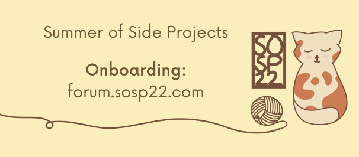

| |
|

Hello, and thank you for demonstrating interest in our program!
Our focus for Summer of Side Projects is to provide students an opportunity to learn how to
build projects outside of their typical CS courses alongside exposure to different fields of
CS through a series of professional development workshops like resume writing or tech
interviewing. We hope by the end of the program, you will have a
portfolio of projects that you will be able to showcase to your friends, potential employers,
and more. But more importantly, we hope you have the skills to work on projects you are
passionate about.
Action Items:
Program Schedule (June 4th - July 2nd):
- Saturdays (12-1 pm CST): we will introduce a new topic to
explore. There will also be an optional 1-hour zoom code session where
we’ll walk through it.
- Tuesdays (11:59 pm CST): turn in an MVP via
google form on the same topic. Don’t overthink it but use this to get going after
you’ve gone through the workshop content.
- Following Friday (11:59 pm CST): turn in your final
project via google form and make a post on the forum showing what
you did to get feedback and encouragement from both fellow students as well as experienced
SOSP staff.
- Sundays (5 - 6 pm CST): be on the lookout for our
professional development events! We will be having workshop sessions ranging
from workflow to how to prepare for technical interviews, branding, and more!
All workshops are optional to attend and are recorded, which will be posted on the website
after the workshop ends.
We look forward to having a fun summer with you!
Best,
Summer of Side Projects Team
|
|
|
|
{kind=link}